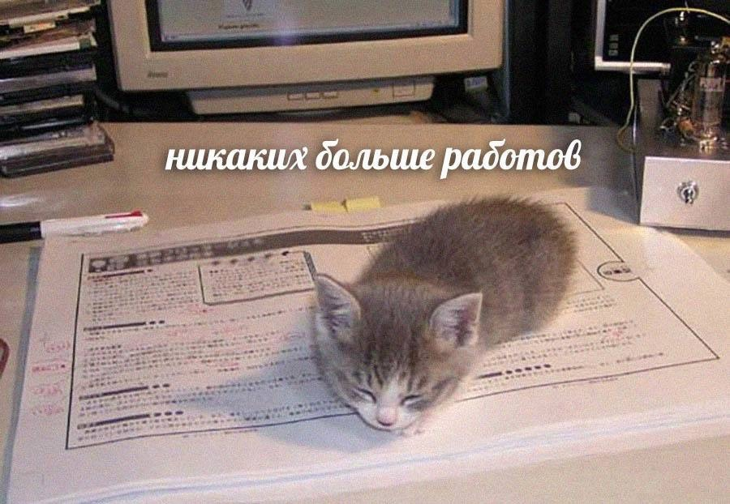

Сайт имеет 5 страниц, включая главную, на которых вы можете изучать штуки и смотреть картинки. Мне кажется интернет создавали именно для этого. Ниже можно узреть великий макет!
Добро пожаловать на мою страницу в интернете. Здесь вы можете узнать о моих последних успехах в творчестве, учебе и личной жизни
Неинтересный факт: Некоторые люди считают, что кодить сайты это прошлый век!
